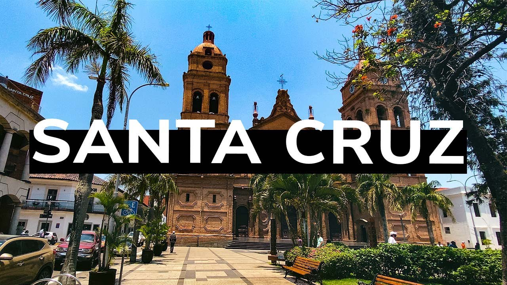

SANTA CRUZ - BOLIVIA Santa Cruz de la Sierra es la capital del Departamento de Santa Cruz, Bolivia. Está situada al este del país, a orillas del río Piraí. Su población es de 1.453.549 habitantes, que unidos a los de su área metropolitana (municipios de Cotoca, Porongo, Warnes, La Guardia, y El Torno)2 ascienden a 1.749.000 habitantes, según datos del INE. Su crecimiento demográfico está entre los más rápidos de América del Sur3 , y es la ciudad más poblada de Bolivia desde que El Alto se segregó de La Paz para ser una ciudad independiente de ésta.
El área ocupada por la ciudad es de 567 km², y tiene un perímetro de 110,2 kilómetros. La ciudad ocupa una extensión mayor al de las ciudades de La Paz y El Alto juntas. La extensión total del Área metropolitana de Santa Cruz de la Sierra es de 1.590 km²,[cita requerida] lo que supera en extensión a ciudades como Montevideo, Asunción y Brasilia.
El tipo clima de la ciudad de Santa Cruz de la Sierra es cálido tropical, cuyos meses de mayor precipitación pluvial son diciembre y enero. El mes más caliente es enero, y el mes más frío es junio.
Santa Cruz de la Sierra es el principal centro comercial, financiero e industrial del país que alberga las mayorías de las sedes de las empresas tanto nacionales como internacionales. Su economía se distribuye en varios rubros como gastronómicos, textiles, espectáculos, bancarios, agroindustriales, turísticos, automovilísticos, etc. La ciudad presenta el índice de desarrollo humano más alto del país.
En los últimos años, la urbe cruceña se erigió como puerta de Bolivia al mundo, siendo sede de eventos internacionales como: la Cumbre Iberoamericana y la Cumbre del G77.
PLATOS TIPICOS.Los platos típicos de Santa Cruz Bolivia son el Majao, locro de gallina, el zonzo entre otros, también son tradicional degustar cuñapé y pan de de arroz.
Majao: Elaborado con charque de res (carne seca), arroz y urucu (pimentón), acompañado de huevo estrellado y plátano frito.
Locro: Se trata de una especie de sopa, compuesta de arroz, charque y colorante. Esta clase de plato puede ser preparado de dos formas: el locro carretero que fue descrito anteriormente y el locro de gallina, que consiste en sustituir el charque con carne de gallina.
La Patasca: Es un caldo que se prepara con carne de cerdo —incluyendo la cabeza— y maíz. Para cuando el plato ya está servido, un buen acompañante es la yuca cocida, cebollita verde picada y sal a gusto del comensal. La patasca es una comida cruceña resultado del intercambio cultural con la región andina.
El zonzo: Se prepara a base de yuca y queso o charque desmenuzado.
Pacumutu: Los ingredientes son carne filete, tomate, cebollas medianas, pimiento morrón rojo, jugo de limón, salsa de soya, aceite y sal.
Manjar blanco: Sus ingredientes son leche, azúcar, canela y harina de Arroz.
Cuñape: Elaborado con quesillo o queso blanco, almidón o harina de yuca, huevo, sal y leche.
Pan de arroz: Elaborado con arroz, harina de yuca, manteca, queso blanco rayado, azúcar cuajada y hojas de plátano.
Jochi Pintao: Elaborado con carne de cerdo, pimienta verde, dientes de ajo, ají molido rojo, salsa soya, limón y aceite de sésamo .
